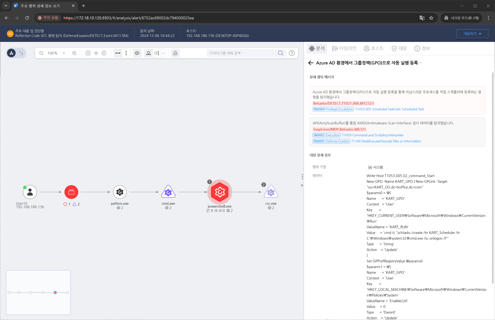

MITRE ATT&CK 액션을 기준으로 대응 방안을 작성
Azure AD 환경에서 그룹정책(GPO)으로 자동 실행 등록을 통해 의심스러운 프로세스를 작업 스케줄러에 등록하는 명령을 탐지합니다.

작업 스케줄링과 관련된 이벤트를 모니터링합니다.
작업 스케줄러 이벤트 로그를 활성화합니다.
예약된 작업 이름이 의심스러운 경우 탐지합니다.
Splunk, Microsoft Sentinel, ELK Stack 등을 사용하여 작업 생성 이벤트를 실시간으로 탐지합니다.
작업 스케줄러 구성 파일(C:\Windows\System32\Tasks)의 무결성을 주기적으로 검사하여 비정상적인 작업 추가 여부를 확인합니다.
작업 예약이 네트워크 기반 명령 실행을 유발할 수 있으므로 네트워크 트래픽을 모니터링하여 비정상적인 아웃바운드 요청을 탐지합니다.
at.exe 비활성화 또는 제거
작업 스케줄러 권한 제어
AppLocker 또는 WDAC 정책 사용
Windows Defender Exploit Guard
최소 권한 원칙 적용
PowerShell Script Logging 활성화
Action 실행시 함께 영향을 받는 다른 Techniqes
| ATT&CK |
|---|
| T1053.005.02 |
| D3FEND |
|---|
| D3-SJA Scheduled Job Analysis |